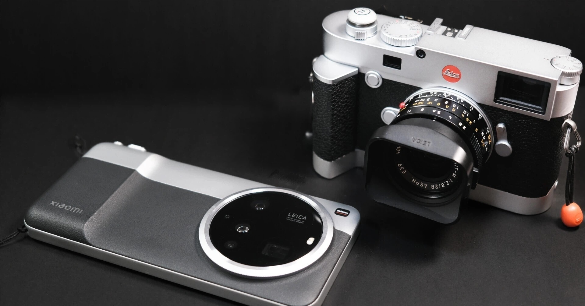

こんにちは、田路昌也（TJ）です。ライカやドローンを片手に、気の向くままに旅をしています。写真と文章で、旅先の空気や日々の発見をゆるく記録しています。トップの画像は、2024年に妻と訪れたカッパドキアで撮影したものです。旅の記憶や新しい発見は、「次はどこへ What's Next」にも載せています。


Video & Photography
カッパドキアのホテルから
記憶すべき風景、馬草壟（Ma Tso Lung）

Silent Waltz of the Gondolas

永遠の守護者たち

桜に抱かれる白鷺城
Latest Writings
記事を読み込み中...